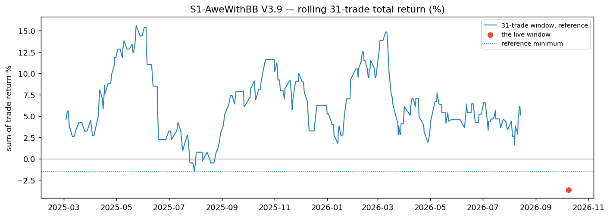
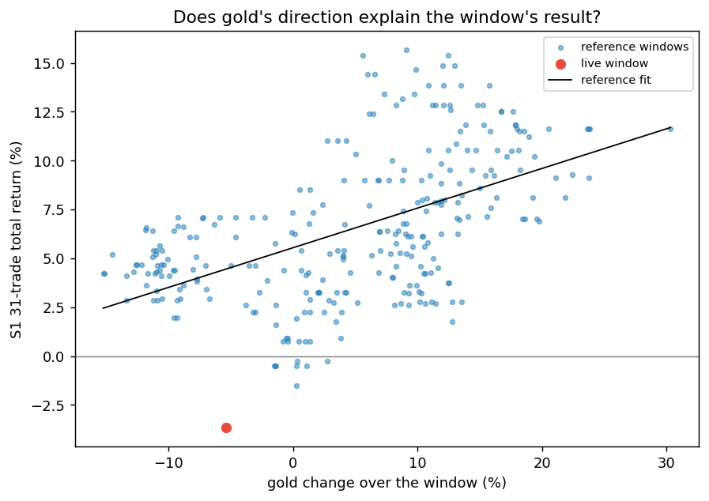
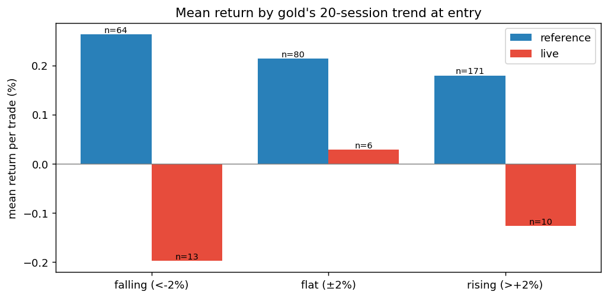
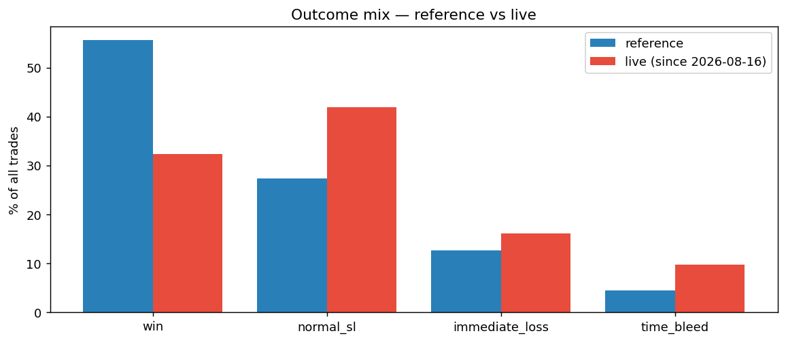
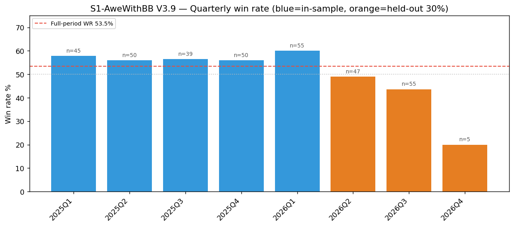
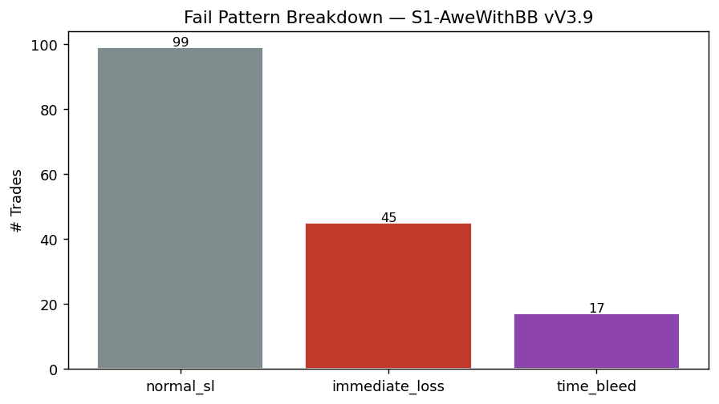
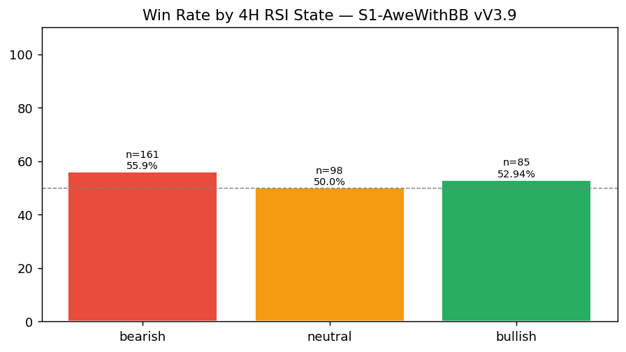

RS-XAUUSD-20261009-001 · XAUUSD · 2026-10-09
S1 V3.9 since the live push began — outside its history, and neither the market nor the entry context explains it
S1 V3.9 自 2026-08-16（Telegram 推播開始）以來的 31 筆回測交易，比匯出檔裡任何更早的時段都差。這是否超出策略自己的歷史範圍？金價方向或波動能否解釋？進場時的市況能否解釋？交易的結束方式變了什麼？依研究規格 §5 標準格式回答，並因為問題本身是「是否衰退」而納入 §5.1 第 11 項。
Headline Metrics 關鍵數字
Key Findings 重點發現
上線後這段已超出策略自己的歷史範圍
勝率 32.26%（n=31），歷史 55.56%（n=315）；獲利因子 0.661 對 1.92。之前 285 個連續 31 筆窗口沒有一個這麼差，最差的是 -1.5%，這次是 -3.67%。互不重疊的 10 段全部是正報酬。
金價下跌不能解釋
這段期間金價跌 5.33%。依歷史窗口的關係，這樣的跌幅應該對應 +4.46%（R² 0.283）。歷史上有 58 個窗口金價跌得一樣多，最差的仍然賺 +1.95%。S1 歷史上反而是在金價跌過之後表現最好。
沒有任何進場條件能把它切出來：每一組裡面都變差了
把金價 20 日趨勢、4H RSI 狀態、盤別、布林位置、30 分鐘 ATR 分組做 shift-share，變化全部來自各組內部，不是組合轉向較差的組。波動略升，但歷史上 ATR 最高的一組反而是 S1 最好的。這份研究不支持任何進場過濾條件。
變的是交易怎麼結束
打到 TP1 的比例從 146/315 降到 9/31；正常停損從 27.3% 升到 41.9%。虧損單裡先走到 TP1 一半（+0.25%）再回頭的比例從 37.1% 升到 47.6%（上線後只有 21 筆虧損單，僅供描述）。
原因沒有確定
這是一段「看起來很差之後才被挑出來」的窗口，所以排列檢定 p=0.008 偏樂觀。資料無法區分「黃金盤中走勢型態改變（現有指標都沒抓到）」和「一段特別差的運氣」。§5.1 第 11 項的時間穩定性判定為 degraded。
詮釋與實務意義
S1 V3.9 從 2026-08-16 開始推播後的 31 筆回測交易，勝率 32.26%、獲利因子 0.661，合計 -3.67%。歷史上 285 個連續 31 筆窗口**沒有一個這麼差**，最差的是 -1.5%。 最直覺的解釋是「只做多的策略剛好遇到跌勢」，但資料不支持：這段期間金價跌 5.33%，依歷史關係 S1 應該還能賺 4.46%；歷史上金價跌得一樣多的 58 個窗口，最差也賺 1.95%。S1 過去反而是在金價跌過之後表現最好。 按金價趨勢、4H RSI、盤別、布林位置、波動度分組，**每一組裡面都一樣變差**，所以找不到任何能把爛單切掉的進場條件。真正變的是交易怎麼結束：打到 TP1 的比例下降、正常停損增加，而且有更多單先往目標走一半才回頭停損。 ⚠️ 這段窗口是「看起來很差」之後才挑出來分析的，統計上偏樂觀；31 筆也只是一段樣本。原因沒有確定，所以採取的做法是預先登記一個前瞻檢驗：接下來 31 筆如果又比歷史最差窗口還差，就停止建議 S1，而不是現在就改策略。
Live Window vs History 上線後 vs 歷史
每個點是一段連續 31 筆交易的合計報酬。上線前 285 段只有 8 段為負，最差 -1.5%；上線後這段 -3.67%。互不重疊的 10 段全部為正。

Rolling 31-Trade Windows
No rows.
Gold Drift Control 金價方向對照
橫軸是窗口期間金價漲跌，縱軸是 S1 該窗口報酬。金價漲跌只解釋 R²=0.283；這次金價跌 5.33%，依歷史關係應該 +4.46%，實際 -3.67%，殘差比歷史上所有窗口都低。

Market Control
No rows.
Gold Trend at Entry 進場時的金價趨勢
依進場前 20 日金價漲跌分三組。歷史上 S1 在金價跌過之後反而最好；上線後跌勢、漲勢都輸，所以不是「遇到跌勢」造成的。各組上線後樣本很小，只能看方向。

By Gold 20-Session Trend
| falling (<-2%) | 64 | 59.38 | 0.263 | 13 | 30.77 | -0.1977 |
|---|---|---|---|---|---|---|
| flat (±2%) | 80 | 57.5 | 0.2141 | 6 | 50 | 0.0283 |
| rising (>+2%) | 171 | 53.22 | 0.1798 | 10 | 20 | -0.127 |
| unknown | 0 | — | — | 2 | 50 | 0 |
Shift-Share 變化來源分解
每一列把「每筆平均報酬的變化」拆成「同一類交易變差」（within）和「交易組合轉向較差的類別」（mix）。五個維度都是 within 幾乎等於全部變化，代表沒有任何一個條件能把爛單切出來。
| gold trend 20d | -0.3238 | -0.3281 | 0.0043 | 0 |
|---|---|---|---|---|
| htf 4h rsi state | -0.3238 | -0.3093 | -0.0145 | 0 |
| session | -0.3238 | -0.313 | -0.0108 | 0 |
| bb zone | -0.3238 | -0.3119 | -0.0119 | 0 |
| atr tercile | -0.3238 | -0.4075 | 0.0837 | 0 |
How Trades End 交易怎麼結束
上線前勝出 55.6%、正常停損 27.3%；上線後勝出 32.3%、正常停損 41.9%。

Outcome Mix
| reference | 175 | 55.6 | 86 | 27.3 | 40 | 12.7 | 14 | 4.4 | 140 | 0.175 | 37.1 | 146 | 140 | 29 |
|---|---|---|---|---|---|---|---|---|---|---|---|---|---|---|
| live | 10 | 32.3 | 13 | 41.9 | 5 | 16.1 | 3 | 9.7 | 21 | 0.23 | 47.6 | 9 | 21 | 1 |
Temporal Stability 時間穩定性
前 70% 交易勝率 57.44%，後 30% 44.23%，依固定規則判定為 degraded。2026 第二季起逐季下滑。

By Quarter
| 2025Q1 | 45 | 57.78 | 1.691 |
|---|---|---|---|
| 2025Q2 | 50 | 56 | 2.208 |
| 2025Q3 | 39 | 56.41 | 1.923 |
| 2025Q4 | 50 | 56 | 1.87 |
| 2026Q1 | 55 | 60 | 2.563 |
| 2026Q2 | 47 | 48.94 | 1.429 |
| 2026Q3 | 55 | 43.64 | 1.197 |
| 2026Q4 | 5 | 20 | 0.247 |
Failure Types 失敗型態（全期間）
全期間虧損的組成。進場時的市況欄位都只讀「已收完」的 K 棒。

Fail Type Breakdown
| normal sl | 99 | 61.5 |
|---|---|---|
| immediate loss | 45 | 28 |
| time bleed | 17 | 10.6 |
4H Trend Alignment 多時間框對齊
描述性脈絡，不是進場條件。

By 4H RSI State
| bearish | 161 | 55.9 | 2.022 |
|---|---|---|---|
| bullish | 85 | 52.94 | 1.589 |
| neutral | 98 | 50 | 1.52 |
Monthly 逐月
S1 回測每月表現與同月金價漲跌。2026 年 8 月金價漲 9.7%，S1 卻打平。
| 2025-01 | 16 | 62.5 | 1.952 | 2.83 | 5.28 |
|---|---|---|---|---|---|
| 2025-02 | 14 | 50 | 1.368 | 1.26 | 1.52 |
| 2025-03 | 15 | 60 | 1.806 | 2.45 | 8.01 |
| 2025-04 | 15 | 66.67 | 4.986 | 9.9 | 5.63 |
| 2025-05 | 18 | 61.11 | 2.312 | 4.5 | 1.54 |
| 2025-06 | 17 | 41.18 | 0.752 | -1.25 | -2.35 |
| 2025-07 | 12 | 41.67 | 0.929 | -0.25 | -1.47 |
| 2025-08 | 14 | 57.14 | 1.894 | 2.66 | 2.5 |
| 2025-09 | 13 | 69.23 | 3.751 | 5.47 | 9.23 |
| 2025-10 | 15 | 60 | 2.442 | 4.26 | 3.56 |
| 2025-11 | 18 | 61.11 | 2.626 | 5.75 | 5.4 |
| 2025-12 | 17 | 47.06 | 0.897 | -0.5 | 2.07 |
| 2026-01 | 15 | 73.33 | 5.623 | 9.27 | 13.01 |
| 2026-02 | 20 | 50 | 1.937 | 4.59 | 13.29 |
| 2026-03 | 20 | 60 | 1.813 | 3.25 | -12.22 |
| 2026-04 | 18 | 50 | 1.352 | 1.66 | -2.99 |
| 2026-05 | 13 | 53.85 | 1.865 | 2.96 | -1.65 |
| 2026-06 | 16 | 43.75 | 1.18 | 0.79 | -10.65 |
| 2026-07 | 18 | 55.56 | 1.778 | 3.11 | 0.25 |
| 2026-08 | 17 | 35.29 | 0.994 | 0 | 9.7 |
| 2026-09 | 20 | 40 | 0.994 | -0.1 | -3.87 |
| 2026-10 | 5 | 20 | 0.247 | -1.57 | -0.84 |
限制與注意事項
- 這是策略回測的交易，不是帳戶實際成交
- 上線後只有一段窗口，而且是事後挑出來的
- 價格匯出只到 2026-10-03，之後 2 筆交易沒有市況資料
- 30 分鐘價格由兩份匯出拼接；重疊處有 49 根收盤價不同，最大差 0.396